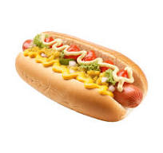

BBQ Hot-Dog

Classic Drazdiak BBQ-Hot-Dog
This classic home-made BBQ-Hot-Dog, inspired by timeless
classic made by Drazdiak best personal
Ingridients
2 Pikok sousages
1 Lidl Hot-Dog bun
20g of Lidl Grill BBQ
2 slices of beacon
10g of chopped onion
1 piece of chopped garlic
How to
Bring pot of water to boil, then reduce heat to low
Put the pikok sousages inside and cook for 5 minutes
Place steamer basket into the pot with the Bun for 2 minutes
Place BBQ, 2 slices of beacon, onion and garlic inside the bun
Finish the dish with both sousages, enjoy!